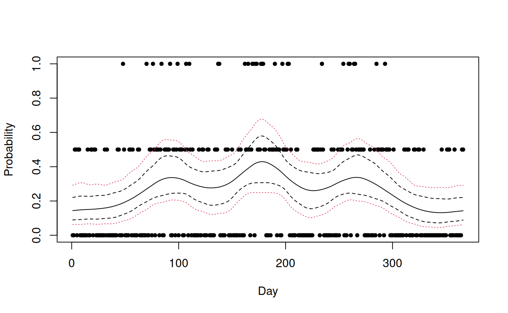
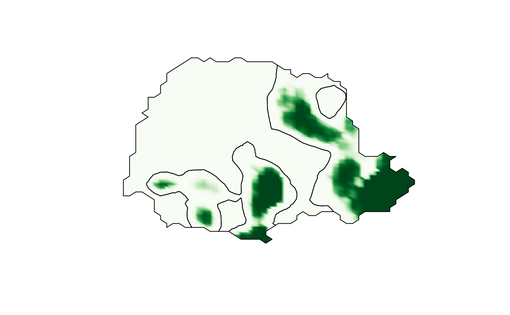
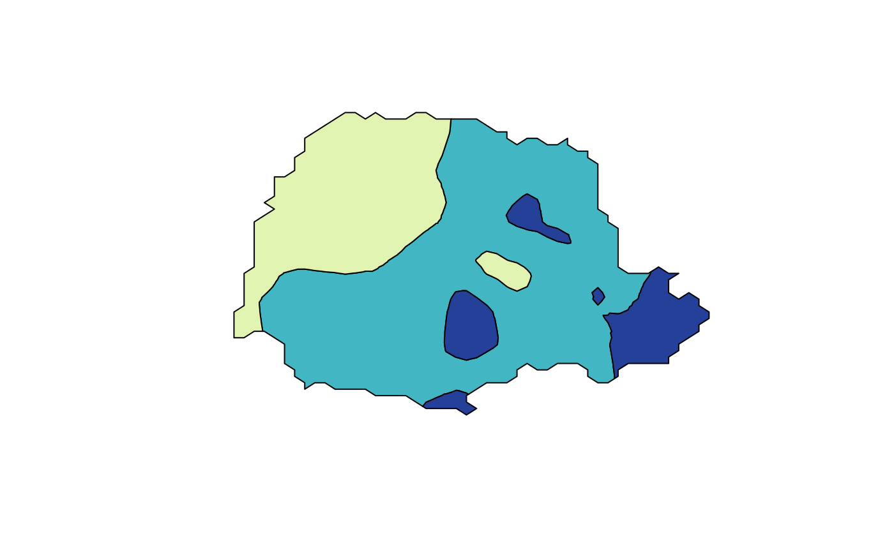

Using excursions with INLA
David Bolin and Finn Lindgren
Source:vignettes/articles/inla.Rmd
inla.RmdIntroduction
The function excursions.inla is used to compute
excursion sets and credible regions for contour curves for latent
Gaussian models that have been estimated using INLA. It
takes the same arguments excursions, except that
mu and Q are replaced with arguments related
to INLA. A basic call to the function
excursions.inla looks like
excursions.inla(result.inla, name, alpha, u, type)Here result.inla is the output from a call to the
inla function, and name is the name of the
component in the output that the computations should be done for. For
more complicated models, one typically specifies the model in
INLA using an inla.stack object. If this is
done, the call to excursions.inla will instead look
like
excursions.inla(result.inla, stack, tag, alpha, u, type)Here stack is now the stack object and tag
is the name of the component in the stack for which the computations
should be done. The typical usage of the tag argument is to
have one part of the stack that contains the locations where
measurements are taken, and another that contains the locations where
the output should be computed.
excursions.inla has support for all strategies described
in Definitions and computational methodology
for handling latent Gaussian structures: The argument
method can be one of 'EB', 'QC',
'NI', 'NIQC', and 'iNIQC'.
Similarly contourmap.inla and simconf.inla
are the INLA versions of the contourmap and
simconf functions. The model specification using these
functions is identical to that in the excursions.inla
function. We now provide two applications to illustrate the methods of
the package using the INLA interface.
An example using a simultaneous confidence bands
We start by a temporal example to illustrate how a simultaneous
confidence band can be created using simconf.inla. We use
the much analyzed binomial time series from (Kitagawa 1987). Each day during the years 1983
and 1984, it was recorded whether there was more than 1 mm rainfall in
Tokyo. Of interest is to study the underlying probability of rainfall as
a function of day of the year. The data is modelled as
for calendar day
.
Here
for all days except for February 29
()
which only occurred during the leap year of 1984. The probability
is modeled as a logit-transformed Gaussian process.
The model and the following INLA implementation of the
model is described further in (Lindgren and Rue
2015).
data("Tokyo")
mesh <- fm_mesh_1d(seq(1, 367, length = 25),
interval = c(1, 367),
degree = 2, boundary = "cyclic"
)
kappa <- 1e-3
tau <- 1 / (4 * kappa^3)^0.5
spde <- inla.spde2.matern(mesh,
constr = FALSE,
theta.prior.prec = 1e-4,
B.tau = cbind(log(tau), 1),
B.kappa = cbind(log(kappa), 0)
)
A <- inla.spde.make.A(mesh, loc = Tokyo$time)
time.index <- inla.spde.make.index("time", n.spde = spde$n.spde)
stack <- inla.stack(
data = list(y = Tokyo$y, link = 1, Ntrials = Tokyo$n),
A = list(A), effects = list(time.index), tag = "est"
)
data <- inla.stack.data(stack)Next, the model is estimated using the inla function.
Since we want to analyze the output using excursions, the
additional option control.compute = list(config = TRUE)
must be specified in the inla function. This makes the
function save some extra output needed by excursions.
result <- inla(y ~ -1 + f(time, model = spde),
family = "binomial",
data = data,
Ntrials = data$Ntrials,
control.predictor = list(
A = inla.stack.A(stack),
link = data$link,
compute = TRUE
),
control.compute = list(config = TRUE),
num.threads = "1:1"
)We now have estimates of the posterior mean and marginal confidence
intervals for the probability of rain for each day. However, if we also
want joint confidence bands, we can estimate these using
simconf.inla as
res <- simconf.inla(result, stack,
tag = "est", alpha = 0.05, link = TRUE,
max.threads = 2
)Note the argument link=TRUE which tells the function
that the results should be returned in the scale of the data, and not in
the scale of the linear predictor. Next, we plot the results, showing
the marginal confidence bands with dashed lines and the simultaneous
confidence band with dotted lines.
index <- inla.stack.index(stack, "est")$data
plot(Tokyo$time, Tokyo$y / Tokyo$n, xlab = "Day", ylab = "Probability", pch = 20)
lines(result$summary.fitted.values$mean[index])
matplot(cbind(res$a.marginal, res$b.marginal),
type = "l", lty = 2,
col = 1, add = TRUE
)
matplot(cbind(res$a, res$b), type = "l", lty = 3, col = 2, add = TRUE)
A spatial example
We will now use a spatial dataset to illustrate how
excursions can be used. In order to keep the parts of the
code that are not relevant to excursions brief, we again
use data available in INLA. The dataset consists of daily
rainfall data for each day of the year 2011, at 616 locations in and
around the stated of Paran'a in Brazil. In the following analysis, we
analyze the data from the month of January.
The statistical model used for the data is a latent Gaussian model,
where the precipitation measurements are assumed to be
-distributed
with a spatially varying mean. The mean is modeled as a log-Gaussian
Mat'ern field specified as an SPDE model. Details of the current model
model and the following INLA implementation can be found in the SPDE
tutorial available on the INLA homepage, see (Wallin and Bolin 2015) for an analysis of the
data using a different non-Gaussian SPDE model.
We start by loading the data and defining the model:
data("PRprec")
data("PRborder")
Y <- rowMeans(PRprec[, 3 + (1:31)])
ind <- !is.na(Y)
Y <- Y[ind]
coords <- as.matrix(PRprec[ind, 1:2])
b <- fm_nonconvex_hull(coords, -0.03, -0.05, resolution = c(100, 100))
prmesh <- fm_mesh_2d(boundary = b, max.edge = c(.45, 1), cutoff = 0.2)
A <- inla.spde.make.A(prmesh, loc = coords)
spde <- inla.spde2.matern(prmesh, alpha = 2)
mesh.index <- inla.spde.make.index(name = "field", n.spde = spde$n.spde)The measurement stations are spatially irregular, but we are
interested in making predictions to a regular lattice within the state.
In order to do continuous domain interpretations, we define the lattice
locations as a lattice object using the submesh function of
the excursions package. The function inout
from the package splancs is used to find the locations on
the lattice that are within the region of interest.
nxy <- c(50, 50)
projgrid <- fm_evaluator(
prmesh,
xlim = range(PRborder[, 1]),
ylim = range(PRborder[, 2]),
dims = nxy
)
xy.in <- inout(projgrid$lattice$loc, cbind(PRborder[, 1], PRborder[, 2]))
submesh <- submesh.grid(
matrix(xy.in, nxy[1], nxy[2]),
list(loc = projgrid$lattice$loc, dims = nxy)
)We now define the stack objects and estimate the model
using inla. Again note that we have to set the
control.compute argument of the results is to be used by
excursions.
A.prd <- inla.spde.make.A(prmesh, loc = submesh$loc)
stk.prd <- inla.stack(
data = list(y = NA), A = list(A.prd, 1),
effects = list(
c(mesh.index, list(Intercept = 1)),
list(
lat = submesh$loc[, 2],
lon = submesh$loc[, 1]
)
),
tag = "prd"
)
stk.dat <- inla.stack(
data = list(y = Y), A = list(A, 1),
effects = list(
c(mesh.index, list(Intercept = 1)),
list(
lat = coords[, 2],
lon = coords[, 1]
)
),
tag = "est"
)
stk <- inla.stack(stk.dat, stk.prd)
r <- inla(y ~ -1 + Intercept + f(field, model = spde),
family = "Gamma",
data = inla.stack.data(stk),
control.compute = list(
config = TRUE,
return.marginals.predictor = TRUE
),
control.predictor = list(
A = inla.stack.A(stk),
compute = TRUE,
link = 1
),
num.threads = "1:1"
)We now want to find areas that likely experienced large amounts of
precipitation. In the following code, we compute the excursion set for
the posterior mean for the level
mm of precipitation. To indicate that this level is in the scale of the
data, and not in the scale of the linear predictor, we use the
u.link=TRUE argument in the excursions
call.
exc <- excursions.inla(r, stk,
tag = "prd", u = 7, u.link = TRUE,
type = ">", F.limit = 0.6, method = "QC",
max.threads = 2
)
sets <- continuous(exc, submesh, alpha = 0.1)We also compute the contour curve for the level of interest on the
continuous domain, using the tricontourmap function.
con <- tricontourmap(submesh, z = exc$mean, levels = log(7))We plot the resulting continuous domain excursion function together with the contour curve using the following commands.
cmap.F <- colorRampPalette(brewer.pal(9, "Greens"))(100)
proj <- fm_evaluator(sets$F.geometry, dims = c(300, 200))
image(proj$x, proj$y, fm_evaluate(proj, field = sets$F),
col = cmap.F, axes = FALSE, xlab = "", ylab = "", asp = 1
)
plot(con$map, add = TRUE)
To visualize the posterior mean using a contour map using the following commands
cmap <- colorRampPalette(brewer.pal(9, "YlGnBu"))(100)
lp <- contourmap.inla(r,
stack = stk, tag = "prd", n.levels = 2,
compute = list(F = FALSE)
)
tmap <- tricontourmap(submesh, z = lp$meta$mu, levels = lp$meta$levels)
plot(tmap$map, col = contourmap.colors(lp, col = cmap))
Here, the contourmap.inla computes the levels of the
contour map and tricontourmap computes the contour map on
the mesh. Finally, contourmap.colors is used to compute
appropriate colours for visualizing the contour map.
The contour map we computed had two contours, and a relevant question is now if this is an appropriate number. To investigate this, we compute the quality measure for this contour map and for contour maps with one and three levels.
lps <- list()
for (i in 1:4) {
lps[[i]] <- contourmap.inla(r,
stack = stk, tag = "prd", n.levels = i,
compute = list(F = FALSE, measures = c("P2")),
max.threads = 2
)
}
print(data.frame(
P2 = c(lps[[1]]$P2, lps[[2]]$P2, lps[[3]]$P2, lps[[4]]$P2),
row.names = c(
"n.level = 1", "n.level = 2",
"n.level = 3", "n.level = 4"
)
))
#> P2
#> n.level = 1 0.9999999965
#> n.level = 2 0.6536147661
#> n.level = 3 0.0337022283
#> n.level = 4 0.0001892993We see that using only one or two contours give very high credibility, whereas using four contours give a credibility that is close to zero. The contour map with three contours has a credibility around and seems to be a good compromise for this application.